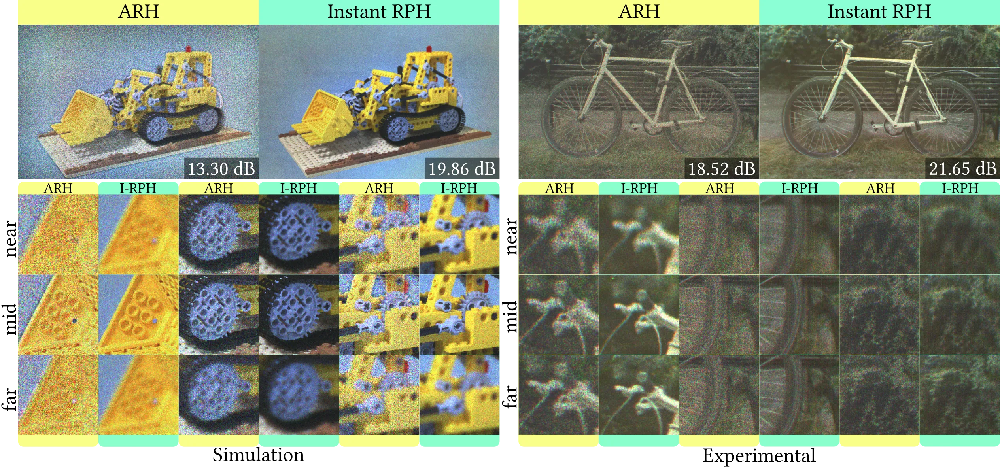

[Simulation] Hover over the video to pause and compare the results!
Computer-generated holography (CGH) has the potential to become a practical medium for immersive AR/VR, offering true volumetric depth, real-time performance, and robustness to optical deviations. However, existing CGH methods are forced to compromise between performance, volumetric accuracy, and robustness.
Instant Random Phase Holography (Instant RPH) generates artifact-resilient holograms by construction, naturally encoding accurate occlusion, view-dependent parallax, and optical blur in a single forward pass.
Instant Random Phase Holography
Our framework bridges modern graphics engines and holographic hardware by rendering arbitrary 3D content (i.e., triangle meshes, 3DGS) into a 21-layer Multiplane Image (MPI) constructed in diopter space to match the human eye's depth of field (DoF), decoupling scene complexity from rendering cost. This MPI is then converted into a complex field using a fixed random phase and our Linear Amplitude Encoders (LAE) to suppress speckle noise and improve hologram quality. Rather than relying on computationally expensive FFT-based Angular Spectrum Method (ASM) propagation, we utilize efficient Compact RSD (C-RSD) convolutions for inter-layer complex-field propagation. Finally, we obtain a phase-only hologram by simply discarding the amplitude, enabling real-time streaming of artifact-resilient 3D content with natural defocus and parallax cues.
Neural One-Step Phase Retrieval Reparameterization
Random phase holograms enable natural defocus, parallax, and artifact resilience. However, current real-time random phase methods suffer from severe contrast loss and heavy speckle noise.
To achieve high-quality random phase holography, we reparameterize One-Step Phase Retrieval. Since the target plane amplitude and SLM phase are strictly coupled via wave propagation, we can encode target amplitude -which would otherwise be lost- directly into the spatial phase profile.
We jointly train time-multiplexed Linear Amplitude Encoders (LAE), a set of scaling and bias textures applied to the target amplitude to actively counteract speckle noise and contrast loss without imposing any iterative overhead.
[Simulation] Hover over the results to zoom in!
Focus Cues
Instant RPH reproduces natural focus cues across triangle meshes and 3DGS scenes, outperforming prior state-of-the-art method in simulation and experimentally. Our LAEs significantly improve color quality and speckle reduction, mostly noticeable in homogeneous areas, such as the Bulldozer's shovel. Furthermore, ARH does not handle occlusion between layers, leading to dark artifacts surrounding different depth layers. Due to our efficient propagation between layers, our Instant RPH shows artifact-free, correct occlusions, while enabling natural, continuous focus cues within the limits of human depth perception.

View-Dependent Parallax
Parallax cues in near-eye holographic displays are subtle, but crucial for an accurate immersive experience.
Instant RPH presents correct parallax cues:
[Simulation] As the pupil moves, the vase shifts position and reveals the hidden background.
BibTeX
@inproceedings{pueyociutad2026instantrph,
title = {Instant Random Phase Holography with Parallax and Defocus Cues},
author = {Pueyo-Ciutad, Oscar and Chu, Victor and Wang, Congli and Tseng, Ethan and Schiffers, Florian and Redo-Sanchez, Albert and Gutierrez, Diego and Heide, Felix},
booktitle = {SIGGRAPH Asia 2026 Conference Papers},
month = {December},
year = {2026}
}